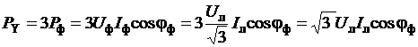
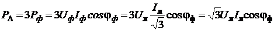
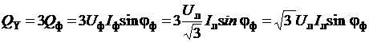
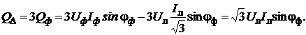

Трёхфазная цепь представляет собой совокупность трёх однофазных цепей, поэтому активная и реактивная мощности трёхфазной цепи равны суммам мощностей отдельных фаз.
При симметричной нагрузке мощности всех фаз одинаковы, поэтому мощности трёхфазных приёмников, соединённых как звездой (PY, QY и SY), так и треугольником (PΔ, QΔ и SΔ), равны утроенным мощностям соответствующей одной фазы:
,
, (2.158)
где активные мощности фаз Pф = Pа = Pb =
Pc = UфIфcosωф (соединение нагрузки звездой);
Pф = Pab = Pbc = Pca = UфIфcosφф (соединение нагрузки треугольником).
Реактивные мощности фаз Qф = Qа = Qb =
Qc = UфIфsinωф (соединение нагрузки звездой);
Qф = Qab = Qbc = Qca = UфIфsinφф (соединение нагрузки треугольником)
и трёхфазного приёмника, соединённого звездой (QY) или треугольником (QΔ ):
и трёхфазного приёмника, соединённого звездой (QY) или треугольником (QΔ ):
,
 (2.159)
Полная мощность фазы Sф и трёхфазного
приёмника, соединённого звездой (SY) или треугольником (SΔ):

(2.160)